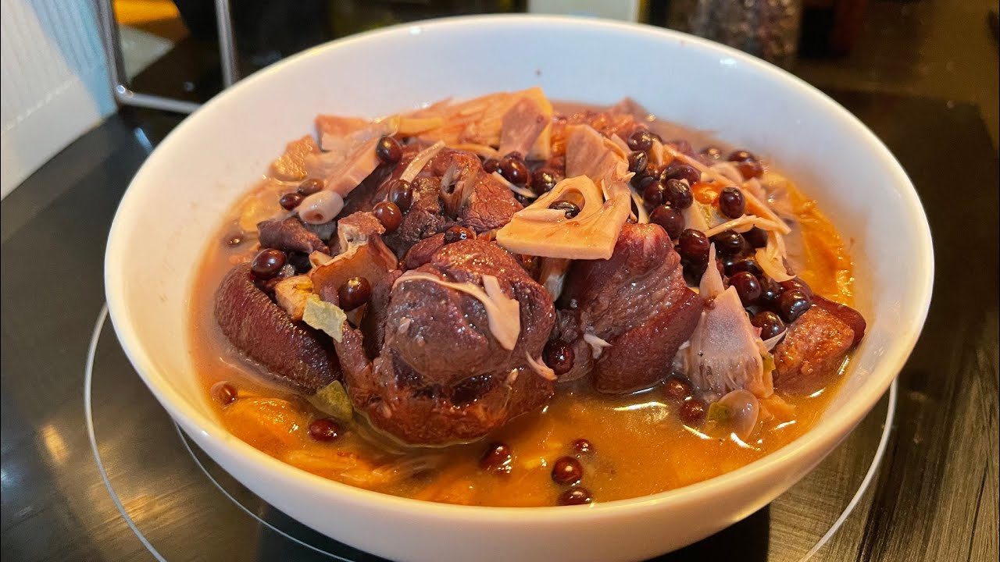

KBL(Kadyos, Baboy, and Langka)

Description
Kadyos, baboy, kag lanka, commonly shortened to KBL, is a Filipino pork soup or stew originating from the Hiligaynon people of the Western Visayas islands. The name of the dish means "pigeon peas, pork, and jackfruit"; the three main ingredients. The soup is also traditionally soured with batuan fruits (Garcinia binucao). Other souring agents like tamarind can also be used. Other ingredients include leafy greens (like young sweet potato leaves, cabbage, or bokchoi), lemongrass, fish sauce, onions,
and siling haba peppers. The pork cut used is typically the hock (pata). The dish is characteristically purple in color due to the use of pigeon peas.
Ingredients
- 1 1/2 lbs Pork Hocks sliced
- 1 unripe jack fruit chopped
- 1 cup pigeon pea kadyos
- 2 cups sweet potato leaves
- 1 1/2 tablespoons sinigang mix or 5 pieces batuan
- 3 to 5 stalks lemongrass
- 1 piece beef cube or pork cube
- 6 cups water per batch
- salt and pepper to taste
Steps
- Pour water in a cooking pot (first batch) and add a little salt. Add pork hocks. Let boil and simmer for 5 minutes.
- Throw away the liquid. Pour-in second batch of water and let boil.
- Put-in lemon grass and beef cube. Simmer for 40 to 45 minutes of until pork is tender.
- Add the pigeon peas. Cook for 20 to 25 minutes. Note: For dried pigeon peas, you need to soak it in water overnight.
- Put-in the sinigang mix, salt, pepper, and jack fruit. Cook for 10 minutes.
- Add the sweet potato leaves. Cover the cooking pot and turn the heat off.
- Transfer to a serving bowl. Serve.
- Share and enjoy!